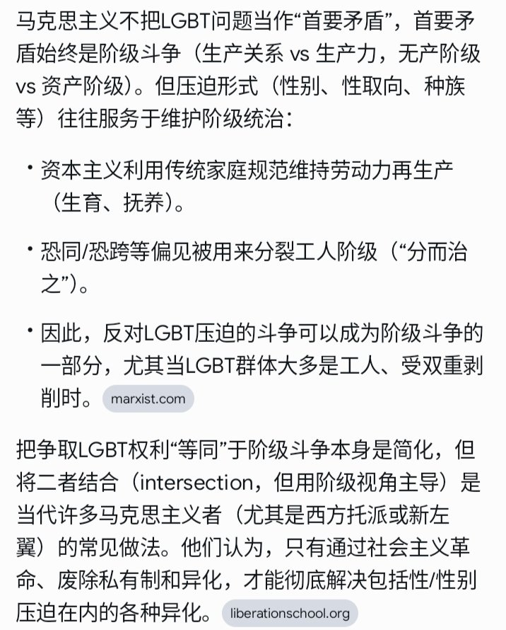

@hintreya967 @TheLongMarchAI 而且你这个ai也说了，恐同、恐跨是被用来分裂工人阶级的手段，那马克思主义者应该怎样做？难道不应该积极支持🏳️🌈的诉求，防止工人阶级被分裂吗？如果说它算是阶级斗争的一部分，那么一个“不认同、不支持”性少数权利的人，不就是破坏阶级斗争、纵容工人阶级被分裂的反革命叛徒吗？
你脑子到底清醒否呢？

你脑子到底清醒否呢？

@432Ifantrygroup @TheLongMarchAI 不是马主义者也不认可一个修b白左有资格开别人马籍了。
一个不是马主义者的人却能用马的理论进行问题分析，而自称马主义者的人却只有情绪输出。你的论证在哪里？让他上前来
你哪怕问问ai呢？ https://t.co/ULIzmzYeeA
一个不是马主义者的人却能用马的理论进行问题分析，而自称马主义者的人却只有情绪输出。你的论证在哪里？让他上前来
你哪怕问问ai呢？ https://t.co/ULIzmzYeeA